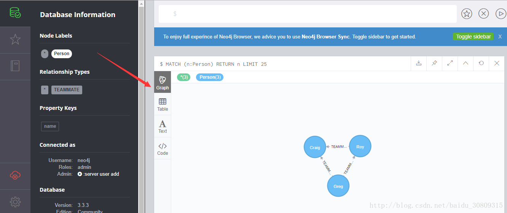

neo4j 是一款高性能的 NoSQL 图形数据库，支持高效遍历，在机器学习、人工智能领域使用越来越广泛。
spring 官网 guides 中有个例子：https://spring.io/guides/gs/accessing-data-neo4j/
完成这个例子前需要手动下载 neo4j server，我下载的是 win-64bit。
下载地址：https://neo4j.com/download/other-releases/#releases
下载完成并解压后，打开 cmd，cd 进入 bin 目录，输入 neo4j.bat console 并执行，可以开启服务。
D:\neo4j\neo4j-community-3.3.3\bin>neo4j.bat console | |
警告: This command does not appear to be running with administrative rights. Some commands may fail e.g. Start/Stop | |
2018-02-26 01:00:37.799+0000 INFO ======== Neo4j 3.3.3 ======== | |
2018-02-26 01:00:37.887+0000 INFO Starting... | |
2018-02-26 01:00:41.428+0000 INFO Bolt enabled on 127.0.0.1:7687. | |
2018-02-26 01:00:50.256+0000 INFO Started. | |
2018-02-26 01:00:52.163+0000 INFO Remote interface available at http://localhost:7474/ |
出现上面启动日志时表示启动成功。
此时可以在浏览器输入 http://localhost:7474/browser/ 并访问，会进入 neo4j server 的控制台。
然后我们将 spring 官网这个例子的代码 clone 到本地，运行一下。
运行成功后，我们再次进入 neo4j server 的控制台，在数据库中就可以看到刚刚存储的图形对象了，如下图

如果不太明白，可以参考百度文库的一篇文章：https://wenku.baidu.com/view/4ff40c174a35eefdc8d376eeaeaad1f346931106